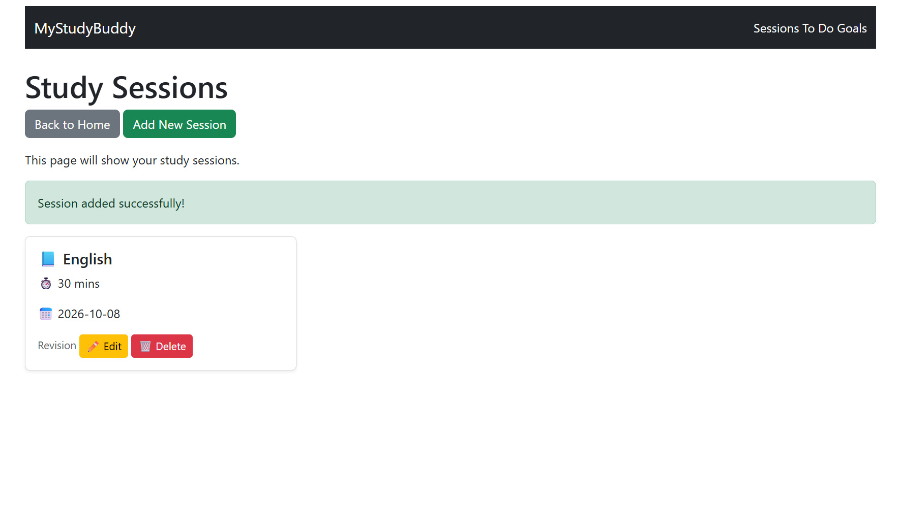
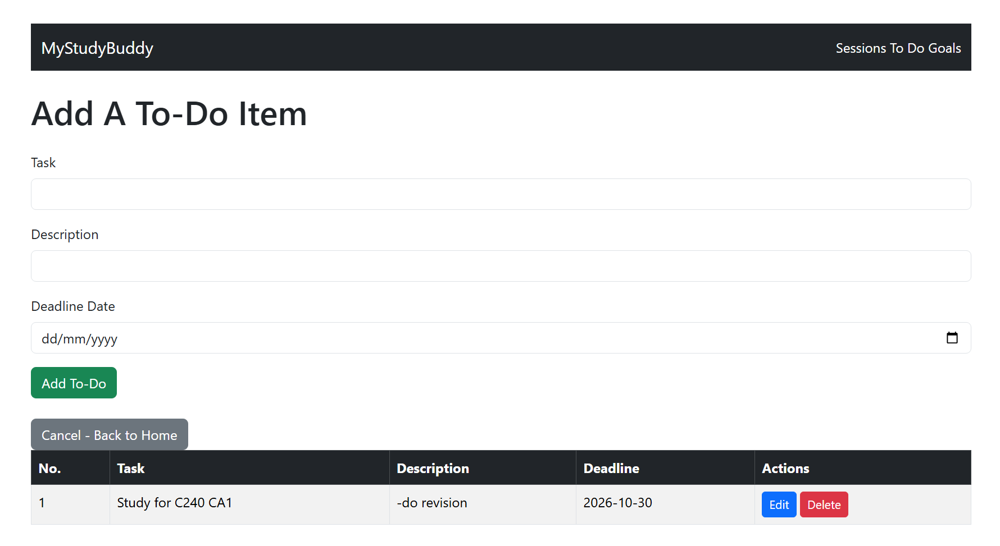
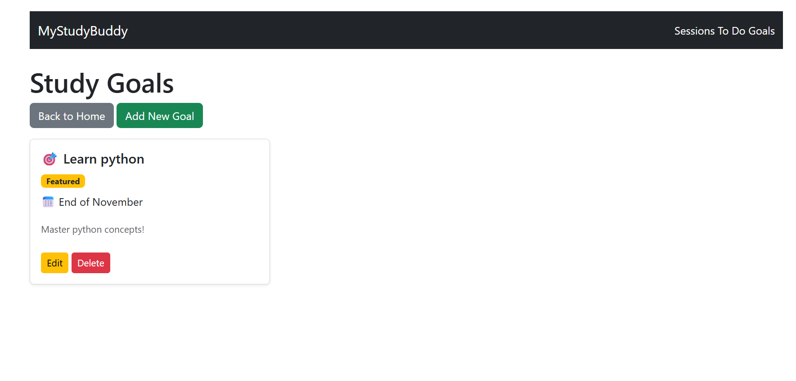

MyStudyBuddy.
A student study-management web application for organising study sessions, to-do tasks and learning goals.
Project overview
I developed MyStudyBuddy as part of my Software Application Development assessment at Republic Polytechnic. The application brings three study-planning features into one place so students can organise their academic work.
What the app does
01 / Study sessions
Students can record a subject, date, duration and notes, then view, edit or delete their study-session records.
02 / To-do list
Students can add tasks with descriptions and deadlines, then edit or delete them as their plans change.
03 / Study goals
Students can create, edit and delete personal learning goals, and highlight important goals as featured.
How I built it
I used Node.js and Express.js for routes and form submissions, EJS for server-rendered pages, and HTML, JavaScript and Bootstrap for the interface. Working on the application helped me practise passing data between forms, server routes and templates, and implementing Create, Read, Update and Delete (CRUD) operations.
How I used AI
AI-assisted development was permitted and declared for this assessment. I used AI to understand coding concepts, troubleshoot errors and explore implementation approaches. I reviewed and adapted suggestions for MyStudyBuddy and documented my prompts, changes, challenges and learning in a Development Reflection Journal.
What I learned
This assessment gave me hands-on practice with Express routing, EJS templates, handling form input and connecting multiple application pages.
Running the application
MyStudyBuddy needs a Node.js server and cannot run directly on GitHub Pages. To run the original project locally, open its complete source-code folder in VS Code, install dependencies with npm install, start the server using the command specified by its package.json or entry file, then open the local address printed in the terminal.
Source code: Browse the original assessment application on GitHub. The screenshots below are from the running application.
← Return to My FinTech WorkFeatures in action.
Selected screenshots from my working MyStudyBuddy application.


